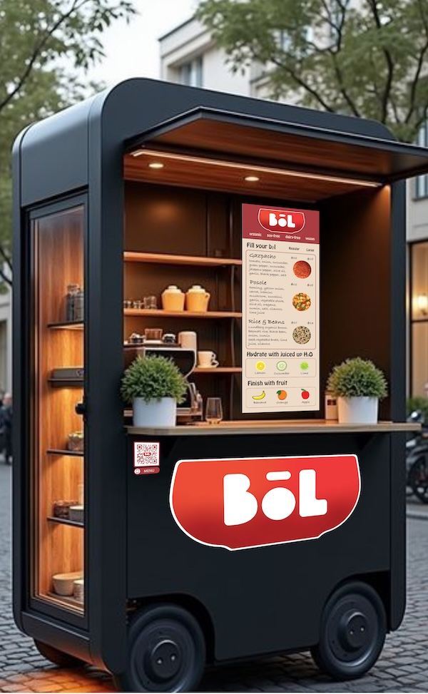

You love food — It should love you back.

BōL is an oasis within the outdoor environment. Diners are welcomed, with senses engaged, by live herb plants, scents of slow cooked foods, and large images of the day"s dishes.
We proudly serve foods free of common allergens, and list all ingredients to assure that your bōl won't contain any suprise triggers. Enjoy our plant-based recipes without the inflamation.
All of our dishes are also free from animal products, while supplying all the fats and protein you need for glowing health.
Follow us for the latest menu options & locations: